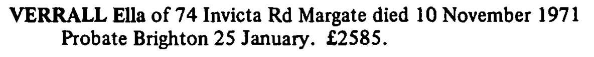
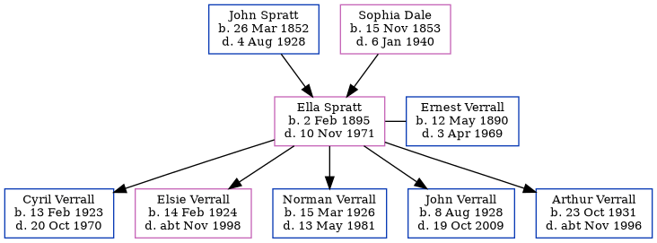

Ella Verrall (née Spratt) 1895 - 1971
[ Home ] | [ Calendar ] | [ Surnames Index ] | [ Errors ] | [ Family History ]A charwork and the child of John Spratt (an agricultural labourer) and Sophia Dale, Ella Spratt, the great-aunt of Nigel Horne, was born in St Nicholas-at-Wade, Kent, England on 2 Feb 18951,2,3,4,5,6,7, was baptised there on 31 Mar 1895 and married Ernest Verrall (a window cleaner with whom she had 5 children: Cyril Ernest, Elsie Amy, Norman Charles, John Leslie and Arthur George) in Thanet, Kent, England around May 19228.
During her life, she was living at 2 Nash Court Cottage, Nash Road, Margate, Kent on 31 Mar 190110 - less than a mile from her sister May Spratt who was living at 2 Nash Court Cottage, Nash Road, Margate, Kent and on 2 Apr 191111; at Nash in Thanet on 19 Jun 19213; and at 74 Invicta Road, Margate, Kent on 29 Sept 19394 - less than a mile from her brother George Dale who was living at 4 St John's Road, Margate, Kent, in 19699 and in 1971.
She died on 10 Nov 1971 in Bridge, Kent, England6.
Parents
- John was born on 26 Mar 1852
- Sophia was born on 15 Nov 1853
Children
- Cyril Ernest was born on 13 Feb 1923
- Elsie Amy was born on 14 Feb 1924
- Norman Charles was born on 15 Mar 1926
- John Leslie was born on 8 Aug 1928
- Arthur George was born on 23 Oct 1931
Citations
- 1901 England Census Online publication - Provo, UT, USA: The Generations Network, Inc., 2005.Original data - Census Returns of England and Wales, 1901. Kew, Surrey, England: The National Archives of the UK (TNA): Public Record Office (PRO), 1901. Data imaged from the National
- 1911 England Census Online publication - Provo, UT, USA: Ancestry.com Operations, Inc., 2011.Original data - Census Returns of England and Wales, 1911. Kew, Surrey, England: The National Archives of the UK (TNA), 1911. Data imaged from the National Archives, London, England.
- 1921 Census Of England & Wales - Findmypast (was age 26 and the daughter of the head of the household)
- 1939 Register - Findmypast (was the wife of the head of the household)
- England & Wales deaths 1837-2007 - Findmypast
- England & Wales, Death Index: 1984-2005 Online publication - Provo, UT, USA: The Generations Network, Inc., 2007.Original data - General Register Office. England and Wales Civil Registration Indexes. London, England: General Register Office. © Crown copyright. Published by permission of the Cont
- England & Wales, FreeBMD Birth Index, 1837-1915 Online publication - Provo, UT, USA: The Generations Network, Inc., 2006.Original data - General Register Office. England and Wales Civil Registration Indexes. London, England: General Register Office. © Crown copyright. Published by permission of the Cont
- England & Wales marriages 1837-2008 - Findmypast
- According to her husband's probate.
- 1901 England, Wales & Scotland Census - Findmypast (was age 6 and the daughter of the head of the household)
- 1911 Census for England & Wales - Findmypast (was age 16 and the daughter of the head of the household)
Media
Ella Spratt - probate

Kent, Canterbury Archdeaconry baptisms 1538-1912 - GBPRS/CANT/B/96802433
England & Wales marriages 1837-2008 - BMD/M/1922/2/AZ/001145/062
England & Wales births 1837-2006 - BMD/B/1895/1/AZ/000573/117
England & Wales deaths 1837-2007 - BMD/D/1971/4/AZ/001273/013
1901 England, Wales & Scotland Census - GBC/1901/0005521361
1911 Census for England & Wales - GBC/1911/RG14/04484/0189/4
1939 Register Transcription - TNA-R39-1756-1756B-015-18
1939 Register Transcription - TNA-R39-1756-1756B-015-17
England Births & Baptisms 1538-1975 - R_884659524
Family Tree
Map
Generated by ged2site. Last updated on Jul 3, 2024
Known Issues
Residence record for 1971 contains no citation